Résumé
Voiture assistée est un projet d'étude portant sur les voitures autonomes et leur fonctionnement. Ce projet m'a été proposé par M. Bonvin étant donné que la première ébauche du cahier des charges comportait en une simulation de voiture autonome, mais ce dans une application windows form. M. Bonvin ayant entendu parler de mon projet, il a su amener un côté plus intéressant et professionnel dans le travail que je vais devoir réaliser. Étant donné la découverte des différents appareils utilisés pour ce projet, la plus-value sera surtout l'acquisition de nouvelles connaissances dans le domaine de l'informatique physique. Par conséquent, le but du projet est de réaliser une voiture se déplaçant à l'aide d'une interface web et qui sait se déplacer par elle-même en évitant les obstacles sur sa route.
Abstract
Voiture assistée is a study project about autonomous cars and their functioning. This project was proposed to me by Mr. Bonvin since the first draft of the specifications included a simulation of an autonomous car but in a windows form application. Mr. Bonvin heard about my project, he knew how to bring a more interesting and professional side in the work that I will have to realize. Considering the discovery of the different devices used for this project, the added value will be especially the acquisition of new knowledge in the field of physical computing. Therefore, the goal of the project is to realize a car that can be moved by a web interface and that knows how to move by itself and which avoids obstacles on its way.
Poster

Cahier des charges
Titre du projet
Le titre du projet est Voiture assistée, car le but du projet est d'en réaliser une.
Contexte
Ce projet m'a été proposé par M. Bonvin car il a vu que j'allais faire une simulation de voiture autonome, il s'est dit que l'on pourrait tourner la chose autrement. Il a une multitude de Raspberry Pi, de composants ainsi qu'une voiture LEGO controlable. C'est pourquoi il m'a dirigé vers une programmation utilisant des capteurs et du bluetooth.
Objectif
L'objectif principal de ce projet est de réaliser une voiture capable de se déplacer d'un point A à un point B en évitant les différents obstacles sur sa route. Pour ce faire, il faudra trouver un moyen de communiquer avec le Technic Hub afin de mouvoir la voiture. Ensuite, il faudra faire fonctionner indépendamment les différents capteurs. Pour ensuite créer un algorithme événementiel gérant les différentes pondérations des messages que les capteurs enverront.
Technologies et matériels utilisés
Logiciels
- Visual Studio Code
- Python
- Flask
- Github
- Markdown
- QCAD
- Photoshop CS6
- Pencil
- Trello
Matériels
- Raspberry Pi 0 WiFi
- Raspberry Pi 4B
- 2 Caméra infrarouges (PI NoIR)
- 4 phares (Bright Pi v1.0)
- GPS (Ultimate GPS Breakout v3)
- Émetteur WiFi (ASUS RT-AC58U)
- LEGO 4x4 X-trem Off-Roader
- Détecteur infrarouge (Flying-Fish)
- Radar 360 (RPLiDAR A2M8)
Environnement de développement
Pour me connecter au Raspberry Pi sur lequel je travail, j'utilise :
- Remote SSH pour éditer le code
- Il s'agit d'une extension Visual Studio Code disponible ici
- Github pour publié mon code écrit sur le Raspberry Pi et pour mettre à disposition la documentation technique ainsi que le journal de bord
- RealVNC pour me connecter à distance à l'interface graphique du Raspberry Pi
- Il s'agit d'un logiciel créant un serveur et un client permettant de contrôler à distance l'écran d'un autre ordinateur, disponible ici.
Description détaillée de ce que l'application fait
La voiture est télécommandable à distance à l'aide d'une interface web. Sur le site internet, on a accès à la gestion des états des différents capteurs ainsi que des données qu'ils envoient tel que pour la détection sol, le radar 360° ainsi que pour le flux vidéo des caméras.
Plan de la voiture

Dans le croquis du plan de la voiture présent ci-dessus, je vais énoncer le rôle de chaque composant.
- Les phares sont représentés par le Bright Pi
- Les détecteurs de sol placés au niveau des roues sont représentés par le Flying-Fish
- Le Raspberry Pi 4 est représenté par RSP 4
- Le Raspberry Pi 0 WiFi est représenté par RSP 0 W
- Le scanner 360° est représenté par le Lidar
En comparaison, voici de quoi est équipée une vraie voiture autonome :

Schéma explicatif de l'application
L'application offre plusieurs pages.
Interface utilisateur de l'application
Une page d'interface utilisateur, pour avoir accès aux informations des capteurs ainsi que leurs états.
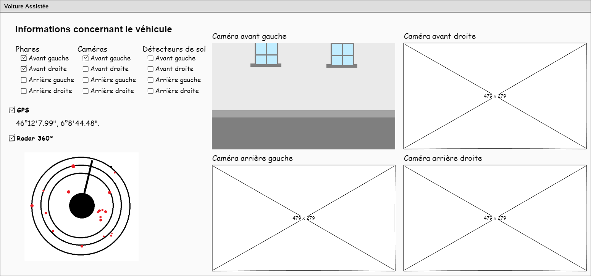
Interface télécommande
Une page de télécommande pour la voiture.
En mode manuel
L'utilisateur déplace la voiture à l'aide de la manette disponible sur le site web.
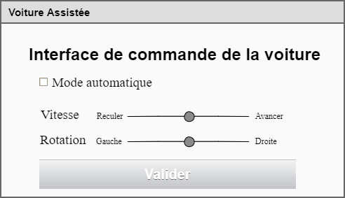
En mode automatique
La voiture se déplace de manière rectiligne en évitant les obstacles sur sa route.

Contact
| Status | Nom | Prénom | Numéro de téléphone | |
|---|---|---|---|---|
| Élève | Ackermann | Gawen | gawen.ackrm@eduge.ch | +41 79 88 98 69 4 |
| Professeur de diplôme | Bonvin | Pascal | edu-bonvinp@eduge.ch | +33 6 32 17 84 11 |
Structure du projet
├── code
│ ├── Bluetooth
│ ├── Bright Pi
│ ├── Camera
│ ├── Flask
│ ├── Flying-Fish
│ ├── Lidar
│ └── OpenCV
├── docs
│ ├── images
│ ├── plans
│ ├── documentation_technique.md
│ ├── index.md
│ ├── logbook.md
│ └── requirements.txt
├── site
│ ├── assets
│ ├── documentation_technique
│ ├── images
│ ├── logbook
│ ├── plans
│ ├── search
│ ├── 404.html
│ ├── index.html
│ ├── sitemap.xml
│ └── sitemap.xml.gz
├── mkdocs.yml
└── README.md
Développement
Dans cette section, nous aborderons la mise en place de base des différents capteurs utilisés.
Description détaillée de chaques capteurs
Raspberry Pi
Il s'agit d'un mini-ordinateur de la taille d'une carte de crédit équipés de différents capteurs, cela dépends du modèle.
Mise en place
En fonction du modèle du Raspberry Pi, il faut flasher les cartes SD avec différents OS avec le Raspberry Pi Imager :
- Pour un Raspberry Pi 4, installé la version
Raspberry Pi OS Full (32-bit)pour faire les tests à l'aide d'une interface graphique - Pour un Raspberry 0 WiFi, installé la version
Raspberry Pi OS Lite (32-bit)utilisé juste pour transiter des données
Utilisation
Pi 4
Un Raspberry Pi 4B est constitué des différents éléments :
 Pour le GPIO, voici les pins disponibles :
Pour le GPIO, voici les pins disponibles :
")
À noter, la pin numéro 1 se situe à côté du module Bluetooth tandis que la pin 39 se situe en diagonal du PoE HAT Header.
Pi 0 WiFi
Le Pi 0 WiFi détient moins d'éléments que le Pi 4, cependant il en détient quelque-uns de différents tel que :
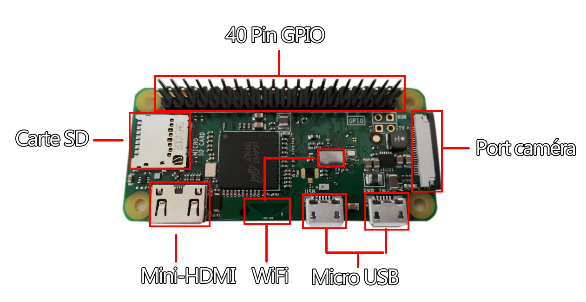
Clonage de carte SD
Pour cloner les cartes SD, j'utilise le programme balenaEtcher.
Une fois les cartes SD branchées en USB au PC, lorsque le programme est lancé, il faut sélectionner le disque à copier, puis le disque sur lequel la copie doit être effectuée et cliquer sur Flash :
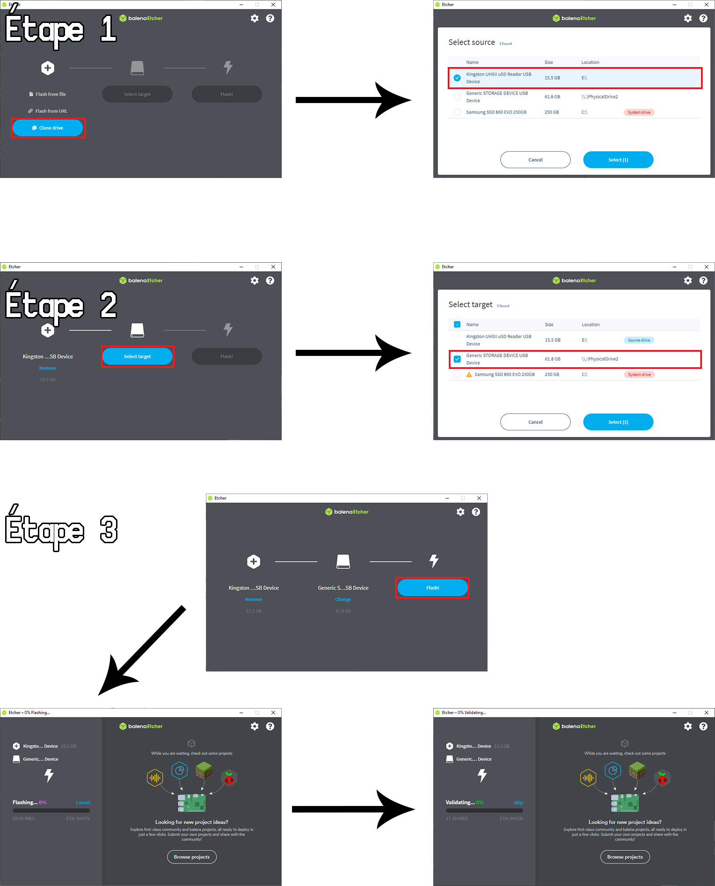
Ventilateur
Un ventilateur dans le cadre informatique est utilisé afin de faire descendre sa température car lorsqu'il fait beaucoup de calcul en même temps il surchauffe et ceci peut causer des problèmes pour la carte.
Le ventilateur est nécessaire car lorsque toutes les caméras sont allumées et que le lidar tourne, sans le ventilateur, le processeur atteint des températures excédant 70° Celcius tandis qu'avec le ventilateur cette température est limitée à 55° Celcius.
Entre temps, je suis passé du ventilateur de gauche à celui de droite :
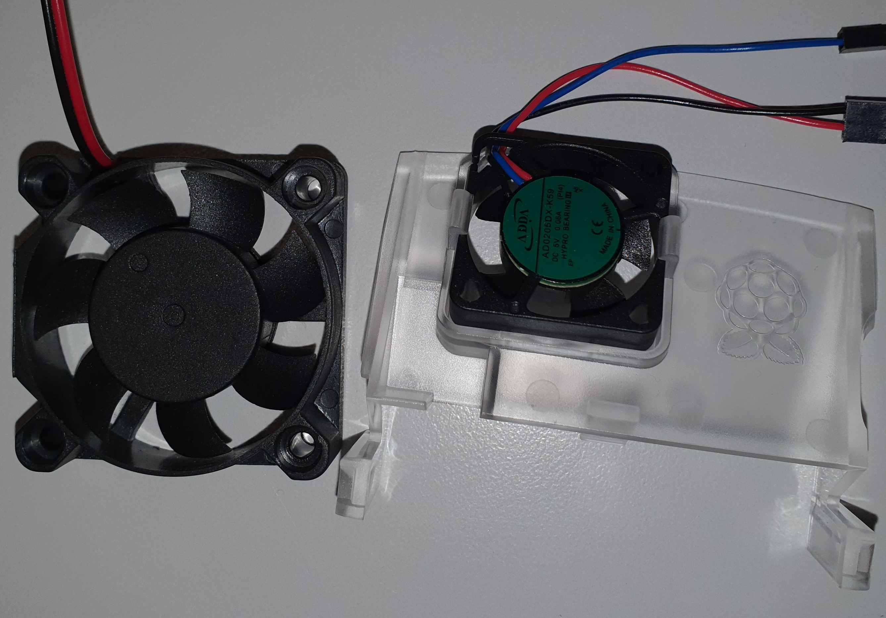
Celui de gauche était temporaire. Je l'avais démonté d'un vieux disque dur, car j'avais demandé à ce que l'on en commande pour un raspberry pi étant donné que mon processeur surchauffait.
Mise en place
Pour le connecter, il faut brancher le câble d'alimentation (rouge) sur la pin 4, le câble de la terre (noir) sur la pin 6 et le câble de transmission (bleu) sur la pin 8 du GPIO comme le montre la boîte dans laquelle le ventilateur était :

Étant donné qu'il est fournit avec un socle, socle qui est enlevable. Je ne l'ai pas enlevé car sinon il aurait été difficle de faire tenir le ventilateur car il toucherait le processeur. C'est pourquoi j'ai utilisé un élastique afin de le maintenant sur le Raspberry Pi 4 :

L'élastique passe sous le Raspberry Pi 4, et tiens sur les branches de côtés.
Caméra
La caméra est un module permettant d'avoir accès à un flux vidéo.
Mise en place
J’ai utilisé le guide de la caméra disponible sur https://magpi.raspberrypi.org/books. Pour commencer, j’ai activé la caméra dans le panneau de configuration du Raspberry Pi, puis j’ai branché la caméra dans l’emplacement prévu qui se situe entre la prise jack et les ports HDMI.
Si vous branchez une caméra à un Pi 4 :

Si vous branchez une caméra à un Pi 0 WiFi :
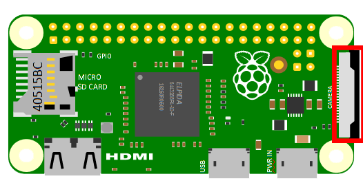
Le ruban de la caméra doit être placé de sorte à ce que la languette bleue fasse face à la prise jack. Pour m’assurer que la caméra soit fonctionnelle, j’utilise la commande suivante pour prendre une photo raspistill -o test.jpg.
À noter que si vous utiliser une caméra sur un Raspberry Pi 0 WiFi, il faut le câble orange comme ci-dessous :

Utilisation
Pour vérifier qu'un flux vidéo pouvait être lu, j'ai utilisé le code ci-dessous :
from picamera import PiCamera from time import sleep camera = PiCamera() camera.start_preview() sleep(5) camera.stop_preview()
À noter, il est nécessaire d'exécuter ce code depuis le Raspberry Pi et non par VNC, car l'affichage de la prévisualisation du flux ne s'affiche pas. D'après ce post disponible sur StackEchange, il semblerait que l'aperçu de la caméra soit géré à un bas niveau dans le processeur graphique et par conséquent n'est visible que par le moniteur directement branché au Raspberry Pi.
Phare (Bright Pi v1.0)
Le Bright Pi est un module comportant 4 leds infrarouges situées aux extrémités et au centre 8 leds.
Mise en place
Pour l’utilisation du Bright Pi, je me suis basé sur le guide disponible à l’adresse suivante : https://learn.pi-supply.com/make/bright-pi-quickstart-faq/. J’ai commencé par activer l’I2C dans le panneau de configuration du Raspberry Pi puis j’ai branché les pins aux emplacements indiqués dans le guide de démarrage. Les couleurs ci-dessous doivent être respectées (pour le placement uniquement).

Pour s'assurer que le branchement soit correct, il est nécessaire d'utiliser la commande i2cdetect -y 1. Ceci devrait être affiché dans la console :
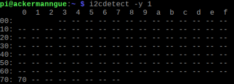
Pour tester le Bright Pi, il est nécessaire d'avoir le kit de développement disponible sur ce repos Github.
Utilisation
Une fois cela fait, il faut importer les éléments concernant le brightpi avec
from brightpi import * import time
Pour faire clignoter les leds manuellement (à l’aide de lignes de code) j’aurai pu utiliser l’objet BrightPi, mais j’ai finalement utilisé le BrightPiSpecialEffects, car il permet d’avoir accès à des fonctions prédéfinies concernant la manipulation des leds, par exemple à les faire s’allumer une à une dans le sens des aiguilles d’une montre, ce qui peut devenir utile par la suite du travail. Voici le code que j'ai écrit. Ce code permet de faire clignoter les leds d'un côté spécifié.
def blink(repetitions, speed, right_leds, left_leds, side): # fait clignoter les leds des côtés spécifiés duration = speed / 2 leds_to_activate = [] leds_to_desactivate = [] for i in range(0, repetitions): if side == "L": leds_to_activate = left_leds leds_to_desactivate = right_leds if side == "R": leds_to_activate = right_leds leds_to_desactivate = left_leds bright_special.set_led_on_off(leds_to_desactivate, OFF) bright_special.set_led_on_off(leds_to_activate, ON) time.sleep(duration) bright_special.set_led_on_off(leds_to_activate, OFF) time.sleep(duration) bright_special = BrightPiSpecialEffects() bright_special.reset() RIGHT_LEDS = [1, 2] LEFT_LEDS = [3, 4] blink(10, 1, RIGHT_LEDS, LEFT_LEDS, "R")
Détecteur infrarouge (Flying-Fish)
Le Flying-Fish est un module comportant 2 leds infrarouges, une qui émet et une autre qui reçois. Il est équipé d'un potentiomètre réglant la distance d'émission.
Mise en place
Comme le montre ce schéma, le Flying-Fish doit être connecté à une alimentation ainsi qu'à un Ground (appelé Terre en français). La dernière broche est la sortie. C'est-à-dire que lorsque la distance d'émission réglée à l'aide du potentiomètre est dépassée, la lumière d'obstacle s'éteindra et cette broche enverra un signal électrique informant du changement d'état.

Il faut importer l'accès au GPIO du Raspberry Pi avec :
import RPi.GPIO as GPIO
Utilisation
C'est pourquoi, j'ai branché le Vcc sur la pin 1 du GPIO, car le voltage accepté est compris entre 3 et 6 Volts, ensuite j'ai branché le Gnd sur la pin 6. J'ai branché le Out à la pin 16 (GPIO 23). Voici le code de test :
import RPi.GPIO as GPIO import time # Set the mode into Broadcom SOC channel # It allows to use GPIO number instead of pin number GPIO.setmode(GPIO.BCM) # Set the GPIO 23 into input mode GPIO.setup(23, GPIO.IN) while True: # The actual state of the GPIO 23 input_state = GPIO.input(23) if input_state == True: print("ATTENTION ! IL N'Y A PLUS DE SOL !") time.sleep(0.5) else: print("Sol détecté") time.sleep(0.5)
Connexion bluetooth avec le LEGO 4x4 X-trem Off-Roader
Le LEGO 4x4 X-trem Off-Roader est une voiture télécommandable en bluetooth.
Mise en place
Dans un premier temps, il faut installer bleak, pygatt et bluepy pour ce faire, j'ai utilisé cette commande : sudo pip3 install pygatt && pip3 install gatt && pip3 install gattlib && pip3 install bluepy && pip3 install bleak puis j'ai télécharger le code sources du repository pylgbst.
Pour tester la connexion bluetooth, j'ai lancé la commande sudo bluetoothctl, ensuite j'ai lancé les commandes suivantes : power on pour m'assurer que le service soit actif, puis scan on. Une fois que des appareils ont été détectés, on peut lancer l'interface graphique située dans la barre des tâches :

ou il est possible d'aller dans les préférences pour l'ouvrir :
 .
.
Une fois cette interface ouverte, il faut cliquer sur le bouton Rechercher, ce qui effectuera un scan des alentours. Une fois le Technic Hub trouvé dans la liste, il est nécessaire de noter son adresse mac : 90:84:2B:50:36:43 afin de pouvoir l'utiliser par la suite.
Utilisation
Pour gérer le déplacement de la voiture, à l'aide du kit de développement fournit par pylgbst, voici le code que j'ai écrit :
from pylgbst.hub import MoveHub from pylgbst.peripherals import Motor, EncodedMotor from pylgbst import * from time import sleep MY_MOVEHUB_ADD = "90:84:2B:50:36:43" MY_BTCTRLR_HCI = "hci0" def forward(motor_1, motor_2, motor_3): motor_1.start_power(-1) motor_2.start_power(-1) motor_3.angled(0) print("done!") def downward(motor_1, motor_2, motor_3): motor_1.start_power(1) motor_2.start_power(1) motor_3.angled(0) print("done!") def go_left(motor_3): motor_3.angled(-180) print("done!") def go_right(motor_3): motor_3.angled(180) print("done!") def stop_moving(motor_1, motor_2): motor_1.start_power(0) motor_2.start_power(0) print("done!") def reset_angle(motor_3): motor_3.angled(degrees=-150) print("test 1") sleep(1) motor_3.angled(degrees=-75) print("test 2") sleep(1) def play_scenario(movehub): motor_a = Motor(movehub, movehub.PORT_A) motor_b = Motor(movehub, movehub.PORT_B) motor_c = EncodedMotor(movehub, movehub.PORT_C) print("Reset angle:") reset_angle(motor_c) sleep(2) print("Forward:") forward(motor_a, motor_b, motor_c) sleep(1) print("Downward:") downward(motor_a, motor_b, motor_c) sleep(1) print("Stop") stop_moving(motor_a, motor_b) print("Left:") go_left(motor_c) sleep(2) print("Right:") go_right(motor_c) sleep(2) def exiting(connection): print("bye") connection.disconnect() conn = get_connection_gatt(hub_mac=MY_MOVEHUB_ADD) try: movehub = MoveHub(conn) play_scenario(movehub) exiting(conn) finally: exiting(conn)
Le code fournit, propose différentes méthodes de connexion tel que :
- bluepy
- bluegiga
- gatt
- bleak
- gattool
- gattlib
Ayant vu dans plusieurs documentations le nom de GATT ressortir, je m'y suis penché pour comprendre de quoi il s'agissait. GATT est un acronyme de l'anglais Generic Attribute Profile, il définit comment les 2 appareils vont échanger leurs données, tout en suivant un système de Services et de Characteristics. C'est pourquoi j'ai utilisé la connexion avec GATT.
Problème rencontré
Au départ, je tentais d'appareiller le Raspberry Pi au Technic Hub depuis les commandes disponibles dans le mode bluetoothctl, mais j'avais cette erreur Failed to pair: org.bluez.Error.AuthenticationFailed.
Comment je l'ai résolu
J'ai alors compris que pour me connecter au Technic hub, j'aurai besoin d'y avoir accès par un moyen qui permette de transmettre des données, car depuis la documentation LEGO, j'ai aperçu des commandes écrites avec des bytes en hexadécimal. De plus,j'ai remarqué qu'ils mettaient à disposition les UUID des hubs, car ils ont tous le même fabricant.
Il y a plein de pistes que j'ai entrevues sur les différents repository, cependant je ne m'y étais pas intéressé plus que ça, car aucun ne mentionnait le nom de Technic Hub. Après avoir été dans les différents repository ci-dessous et après avoir regardé comment étaient écrit leurs transmissions au hub bluetooth. J'ai réussi à comprendre comment je pouvais m'appareiller au Technic Hub et comment interagir avec.
Radar 360 (RPLiDAR A2M8)
Le RPLiDAR A2M8 est un scanner laser à 360°. Il permet de connaître la distance entre lui et les obstacles à chaque angles.
Mise en place
Le lidar est branchable par port série. Cependant, un adaptateur est fournie avec et nous permet de récupérer les données par USB.

Au dos de l'adaptateur, on peut y voir les éléments suivants :

| Couleur du câble | Nom du signal | Type de signal | Description | Tension minimale | Tension habituelle | Tension maximale |
|---|---|---|---|---|---|---|
| Rouge | VCC | Power | Puissance totale | 4.9V | 5V | 5.2V |
| Vert | TX | Output | Sortie des données sur le port série relative au scanner | 0V | 3.3V | 3.5V |
| Jaune | RX | Input | Entrée des données sur le port série relative au scanner | 0V | 3.3V | 3.5V |
| Noir | GND | Power | La Terre | 0V | 0V | 0V |
| Bleu | MOTOCTL | Input | Moteur de scan, régulé avec un PWM | 0V | 3.3V | 5V |
Informations complémentaires pour le PWM, voici les valeurs utilisées :
| Unité | Valeur minimale | Valeur habituelle | Valeur maximale | |
|---|---|---|---|---|
| Haut niveau de tension | Volts | 3.0 | 3.3 | 5 |
| Fréquence du PWM | Herz | 24,500 | 25,000 | 25,500 |
| Plage de cycles d'utilisation | Pourcent | 0 | 60 | 100 |
Si on le souhaite, on peut modifier la vitesse de transmission. De base, la vitesse de transmission est paramétrée sur 115'200 Baud, mais on peut la montée à 256'000 Baud.

Il faut commencer par télécharger le kit de développement disponible sur le repository officiel de Slamtec. Une fois le SDK téléchargé sur le Raspberry. Nous pouvons brancher le Lidar à l'adaptateur. Depuis l'adaptateur, branché le micro-USB dessus puis l'USB au Raspberry Pi.

Utilisation
Afin de vérifier qu'il soit bien détecter, il faut exécuter la commande suivante ls /dev/*USB* ceci devrait être retourné /dev/ttyUSB0. Dans le dossier du code source, il faut aller dans le répertoire sdk/app/ et exécuter la commande make dans un terminal. Pour exécuter l'un des 3 programmes suivant :
- ultra_simple
- simple_grabber
- frame_grabber
Nous pouvons maintenant exécuter le programme souhaité en utilisant la commande suivante dans un terminal : nom_du_programme /dev/ttyUSB0.
Problème rencontré
Les codes fournis fonctionnent parfaitement, sauf qu'aucun ne permet de récupérer depuis une variable ou autre les valeurs d'angles. Cependant, elles sont affichées dans la console.
Comment je l'ai résolu
Il y avait 2 possibilités :
- La première était de récupérer les câbles séries (rouge, bleu, jaune, ...) et de les connecter directement au GPIO sur les pins qui fournissent :
- TX
- RX
- VCC
- Ground
- MotorCTL est un PWM
Comme indiqué sur ce schéma du GPIO du raspberry pi de manière plus détaillé que le premier vu dans la section parlant des Raspberry Pi :

Il s'agirait donc des pins : 2 (VCC), 6 (GND), 8 (TX), 9 (RX)
- La seconde option était de récupérer les données que l'API de Slamtec, ici présente écrite en
C++. Cette dernière fournissait les données en les affichant dans la console sous un format :Theta: 210.31 Dist: 00875.00, Theta représentant un angle et Dist représentant la distance en millimètre d'un obstacle.
Malheureusement trop tard, j'ai trouvé cette librairie en python qui faisait quasiment tout le travail à ma place.
Cela dit, la méthode que j'utilise actuellement se résume à ça :

Le problème de cette méthode est qu'elle n'est vraiment pas optimisée car on va lire de manière asynchrone les données reçues par le programme C++ et traitée puis mise dans le tableau de distance à chaque itération. Cette même itération est stoppable à tout moment avec un paramètre à changer dans le lancement du processus.
Émetteur WiFi (ASUS RT-AC58U)
Un émetteur sans fil diffuse des ondes en utilisant la fréquence radio (RF). Il permet de rendre une connexion internet sans y être connecté de manière filaire. Pour ce projet, nous utilisons un ASUS RT-AC58U.
Mise en place
Branchement
Pour mettre en place le routeur, il faut d'abord brancher l'alimentation dans le port indiqué ainsi que le câble ethernet permettant la connexion à internet dans le port bleu. Pour récupérer les sorties ethernet, il faut les brancher dans les ports jaunes.

Sur le haut du routeur, on peut voir différentes leds s'allumer, voici la signification de ces dernières :
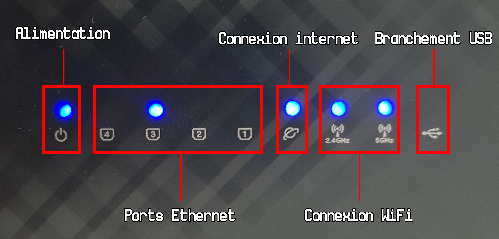
Une fois que le branchement est fait, il faut se rendre sur http://router.asus.com/, la page de connexion vous sera alors affichée. Par défaut, les identifiants pour s'y connecter sont pour le nom d'utilisateur ainsi que pour le mot de passe admin.

Configuration
Pour commencer à paramétrer le réseau, il faut en un premier temps cliquer sur le bouton Quick Internet Setup

Cette première page sera affichée, vous laissant le choix entre une configuration rapide ou détaillée. Le mode avancé n'étant pas nécessaire, il est préférable de cliquer sur le bouton Create A New Network
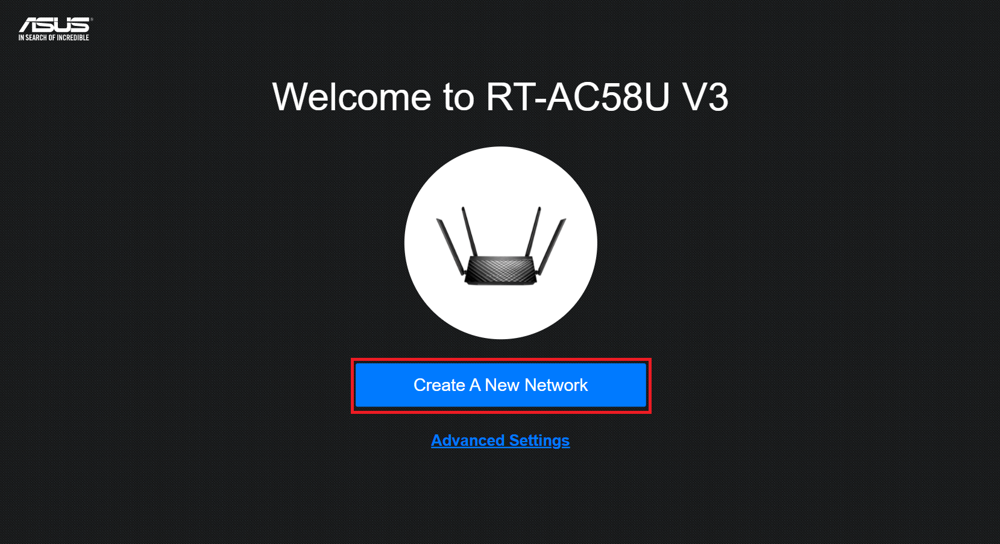
Ensuite, cette page de configuration s'affichera, et vous pourrez renter les différentes informations telles que le SSID (nom du réseau) et son mot de passe. Une fois les différents champs remplis, il faut cliquer sur Apply.
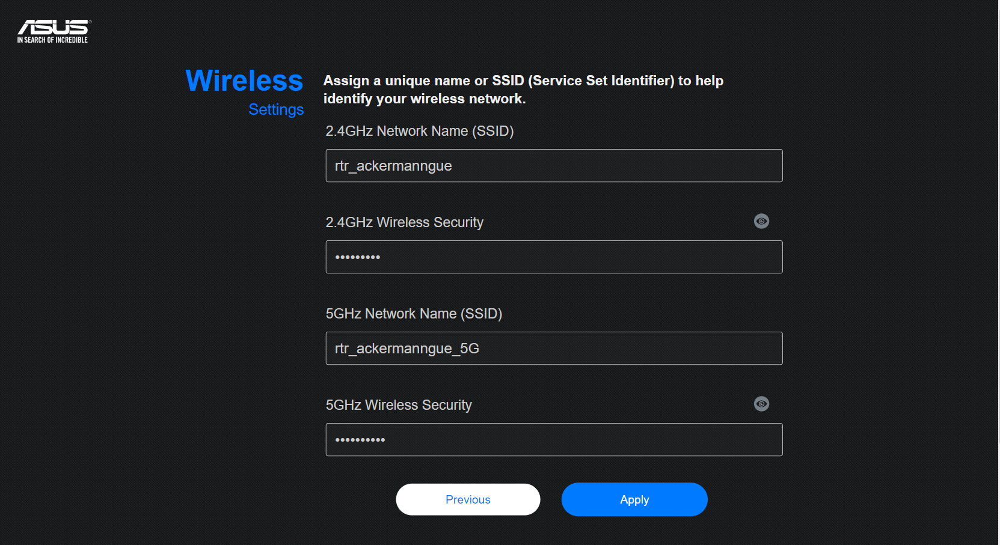
Le routeur va nous demander si l'on veut que Yandex soit active, son rôle est de restreindre l'accès aux sites malicieux et aux contenus pour adulte. Dans mon cas, je l'ai activé :

Il est fort probable que vous deviez mettre à jour votre appareil avec le firmware :

Changement des paramètres de connexion à l'interface web
Pour modifier le nom d'utilisateur ainsi que son mot de passe, il faut cliquer sur le bouton Administration :

Cette page s'affichera, et il faudra cliquer sur l'onglet System afin d'avoir accès à l'interface nous permettant de modifier ces informations :

Une fois dans l'onglet, vous pourrez modifier les informations ici :
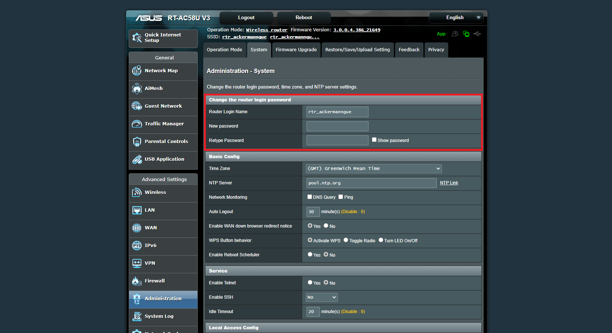
Utilisation
Il faut activer le WiFi sur l'appareil que l'on souhaite connecter, une fois les réseaux scannés. Nous devrions pouvoir avoir accès au réseau le_SSID_du_réseau et s'y connecter en entrant le mot de passe choisi sur l'interface nous permettant de paramétrer notre réseau.
Python Flask
Flask est un framework web disponible en python qui permet de développer aisément des applications web.
Mise en place
Flask est téléchargeable depuis la commande pip3 install Flask.
Utilisation
Dans un premier temps, il est important de créer un fichier python. Dans cet exemple, ce sera hello.py.
Application de base
Il faut d'abord importer Flask. Et l'initialiser de la manière suivante :
from flask import Flask app = Flask(__name__) @app.route('/') def hello_world(): return 'Hello, World!'
Pour lancer l'application, il faut d'abord exporter la variable d'environnment FLASK_APP de la manière suivante dans un terminal : export FLASK_APP=hello.py. Une fois cela fait, lancer le serveur avec la commande : flask run --host=0.0.0.0. Le --host=0.0.0.0 rend l'accès au serveur public depuis d'autres appareils connectés sur le réseau. Dans mon cas, mon Raspberry Pi a cette adresse IP : 10.5.50.42 et mon PC 10.5.50.52. Pour aller sur le site, je tape l'adresse IP du Raspberry Pi ainsi que le port 5000, http://10.5.50.42:5000/.
* Serving Flask app "hello.py"
* Environment: production
WARNING: Do not use the development server in a production environment.
Use a production WSGI server instead.
* Debug mode: off
* Running on http://0.0.0.0:5000/ (Press CTRL+C to quit)
127.0.0.1 - - [28/Apr/2021 08:42:15] "GET / HTTP/1.1" 200 -
127.0.0.1 - - [28/Apr/2021 08:42:16] "GET /favicon.ico HTTP/1.1" 404 -
10.5.50.52 - - [28/Apr/2021 08:42:32] "GET / HTTP/1.1" 200 -
10.5.50.52 - - [28/Apr/2021 08:42:32] "GET /favicon.ico HTTP/1.1" 404 -
Le port 5000 étant le port par défaut définit par Flask, mais qui est changeable avec le paramètre flask run --host=0.0.0.0 -p 8000, dans ce cas, le port de Flask sera changé à 8000.
Routes
Flask fonctionne avec un système de routes. Les routes sont écrites de la manière suivante :
@app.route('/nom_de_la_route') def nom_de_la_fonction(): # Code ... return html_a_afficher
Lors de l'accès à une route, le code à l'intérieur de la fonction sera exécutée puis rendra de l'HTML à afficher.
On peut aussi récupérer une valeur depuis la route de la manière suivante :
@app.route('/hello/<name>') def hello(param_name): return render_template('hello.html', name=param_name)
Templates
Si les routes rendent de l'HTML, c'est que l'on peut injecter des valeurs dans du code HTML pré-écris. Pour ce faire, à la racine du projet, il faut créer un dossier précisément nommé de la sorte : templates. Ce répertoire contiendra les différents templates HTML à afficher. Voici comment un fichier de template HTML est écrit :
<!doctype html> <title>Hello from Flask</title> {% if name %} <h1>Hello {{ name }}!</h1> {% else %} <h1>Hello, World!</h1> {% endif %}
Les balises {% ... %} permettent d'écrire du code comme des tests et des boucles.
Les balises {{ nom_de_la_variable }} permettent d'injecter des valeurs dans l'HTML dynamiquement.
Depuis le code python, pour pouvoir utiliser des templates, il faut importer render_template comme suit : from flask import render_template
Barre de navigation
En prérequis, il faut installer les librairies :
- flask_bootstrap
- flask_nav
Voici la commande à utiliser : sudo pip3 install flask_bootstrap && sudo pip3 install flask_nav
Ensuite, dans le code une fois les libraires importées comme suit :
from flask_bootstrap import Bootstrap from flask_nav import Nav from flask_nav.elements import *
Nous pouvons initialiser notre barre de navigation avec un nom ainsi que leurs routes :
topbar = Navbar( View('Accueil', 'home'), View('Télécommande', 'control_car'), View('Déconnexion', 'close_connection'), View('Créer une connexion', 'create_car'), ) nav = Nav() nav.register_element('top', topbar) app = Flask(__name__) Bootstrap(app)
Pour y avoir accès, on peut l'inclure dans une page HTML de la manière suivante :
{% block navbar %} {{nav.top.render(id='top-navbar')}} {% endblock %}
Formulaires
Les formulaires avec Flask sont écrits en HTML classique :
<form action="/route_apres_validation" method="POST ou GET"> <input type="text" name="input_txt" placeholder="..." /> <input type="checkbox" name="input_cbx" checked="true" /> <input type="submit" value="valider" name="input_validation" /> </form>
Pour récupérer les informations des différents champs du formulaire, voici le code qui permet de les récupérer :
@app.route('/route_apres_validation', methods=['GET', 'POST']) def nom_de_fonction(): if request.method == 'POST' and request.form["input_validation"]: valeur = request.form["nom_input_html"] # Traitement ... return html_a_afficher
Dans le paramètre methods de la route, le paramètre GET est celui de base, mais peut être changé par POST.
Javascript / AJAX
Étant donné que Flask nous permet d'écrire des pages HTML qui seront insérés dans la page lors de l'appel (voir la section regroupant les Templates), cela veut dire que nous pouvons écrire du javascript à l'aide des balises <script type=text/javascript></script>. Pour le cas d'AJAX, il suffit de télécharger la librairie JQuery afin d'y avoir accès ou en utilisant le CDN <script src="https://code.jquery.com/jquery-3.6.0.min.js" integrity="sha256-/xUj+3OJU5yExlq6GSYGSHk7tPXikynS7ogEvDej/m4=" crossorigin="anonymous"></script>.
À noter, que l'unique différence entre ces deux manières d'avoir accès à JQuery, est que l'un est accessible en ligne et l'autre sur la machine donc la rapidité d'exécution, car en utilisant la version en ligne, en fonction du débit de la connexion, il peut y avoir de la latence.
Pour mettre en place de l'AJAX, il faut dans des balises script sur l'une des pages HTML présentent dans le répertoire templates. La méthode serialize(), permet de récupérer de sérialiser les données présentes dans le formulaire HTML.
<script> function execute(){ $.ajax({ url: '/bg_processing_car/', data: $('form').serialize(), type: 'POST', success: function(response) { console.log("action performed"); }, error: function(error) { console.log(error); } }); } </script>
Et dans le code python, voici comment on récupère et traite les données :
On peut considérer les données envoyées par l'appel AJAX comme ceci :
[ { rngMove : 75, rngRotationAngle : 1 } ]
Et on les récupèrent exactement comme pour un formulaire classique :
@app.route("/bg_processing_car/", methods=["POST"]) def bg_process_car(): """Process the values passed by Javascript""" automatic_mode = MODE_OFF move_speed = request.form["rngMove"] angle_rotation = request.form["rngRotationAngle"] car = CarController() # Reverse the result because it returns True if there isn't a ground below grounded = not GPIO.input(GPIO_FLYING_FISH_FRONT_RIGHT) car.move(float(move_speed), int(angle_rotation), grounded) return render_template( "form_remote_car.html", mode=automatic_mode, speed=move_speed, angle=angle_rotation, )
Bluetooth
Qu'est-ce que le bluetooth ?
Le bluetooth est une norme de communication à courte distance utilisant des ondes radios sur la bande de fréquence 2,4GHz. Ce qui permet d'échanger des données dans les deux sens en peer-to-peer dans un picoréseau.

Un picoréseau (en anglais piconet) est un mini-réseau qui se crée de manière instantanée et automatique quand plusieurs périphériques Bluetooth sont dans un même rayon.
Comment est-il structuré ?
Quand on parle de bluetooth, au niveau des protocoles, on peut parler de relations Maîtres et d'Esclaves. Le Maître Bluetooth est celui qui peut initier une connexion avec un périphérique (ou Esclave), cependant une fois les appareils connectés, le Maître et l'Esclave peuvent échanger des informations sans restriction (en fonction de la limitation de l'application).
Les relations Maître-Esclave sont gérées par le gestionnaire de liaison. Il implémente le protocole L2CAP (de l'anglais Logical Link Control and Adaptation Protocol) et le gère (création, destruction de canaux). Il implémente aussi les mécanismes de sécurité comme :
- l'authentification
- l'appairage (l'association)
- la création et la modification des clés
- et le chiffrement
Sécurité
Il existe 3 modes de sécurité :
- Mode 1
- Non sécurisé pour toutes opérations
- Peut uniquement communiquer avec des appareils du même mode
- Mode 2
- Fournit un niveau de sécurité à la couche application après l'établissement d'une liaison avec un autre dispositif
- Mode 3
- Fournit un niveau de sécurité avant l'établissement du canal de communication
- Chiffrement sécurisé au niveau de la liaison avec autre dispositif
À noter, si un service effectue une demande de connexion, le mode de sécurité les plus haut sera celui utilisé afin de traiter la demande toute en s'assurant de la sécurité relative aux différents modes.
Le bluetooth est divisé en deux parties :
- La couche contrôleur implémentant la partie matérielle
- La couche hôte implémentant la partie logicielle.
L'émission et la réception de signaux radio sont possible grâce à un module RF (RadioFrequency).
L'interface host-controller (HCI) fait la liaison entre la couche hôte et la couche contrôleur en assurant le transfert des événements et des paquets de données. Cette interface assure le transfert d’information pour que la couche hôte puisse découvrir, ajouter et gérer les appareils dans un picoréseau.
Chaque paquet possède un champ header permettant de distinguer le picoréseau de l’appareil des autres picoréseaux. Voici le format d'un paquet :
| Champ | Header | Access Address | Protocol Data Unit (PDU) | Cyclic redundancy Check (CRC) |
|---|---|---|---|---|
| Taille en bits | 8 | 32 | de 2 à 39 | 24 |
Le PDU est une unité de mesure des informations échangées dans un réseau informatique. Appliqué aux couches du modèle OSI, le PDU de :
- La couche physique est le bit.
- La couche liaison est la trame.
- La couche réseau est le paquet.
- La couche transport est le segment pour TCP, et le datagramme pour UDP.
- Les couches application, présentation et session sont les données.
Le Cyclic Redundancy Check, autrement appelé contrôle de redondance cyclique, permet de détecter des erreurs de transmission ou de transfert par ajout, combinaison et comparaison de données redondantes, obtenues grâce à une procédure de hachage. Cette méthode est comparable au checksum, mais ce dernier est plus élaboré.
Les paquets reçus par le HCI sont traités par le protocole L2CAP. Il assure le transport des paquets vers les couches supérieures du modèle OSI, la segmentation et le ré-assemblage des paquets.
La couche de liaison est définie dans les systèmes bluetooth comme la couche assurant le transport des paquets entre les appareils d’un même picoréseau à travers plusieurs canaux :

- Basic channel : Canal pour la communication entre deux appareils
- Adapted piconet channel : Canal pour la communication dans le picoréseau
- Inquiry scan : Canal pour l'acquisition des appareils bluetooth aux alentours
- Page scan : Canal pour la connexion avec un nouvel appareil
Qu'est-ce que Generic Access Profile
Generic Access Profile (GAP), est responsable de la connexion. De plus, il gère aussi :
- les modes d'accès
- les procédures du dispositif
- la découverte du dispositif
- l'établissement et la fin de la liaison
- le lancement des fonctions de sécurité
- la configuration du dispositif.

- Veille : le dispositif est dans l'état initial de veille lors de la réinitialisation.
- Annonce : Le dispositif envoie un message d'annonce avec des données spécifiques pour faire savoir aux dispositifs initiateurs qu'il est un dispositif connectable (cette annonce contient l'adresse du dispositif et peut contenir des données supplémentaires telles que le nom du dispositif).
- Scan : Lorsqu'il reçoit l'annonce, le dispositif de scan envoie une demande de scan à l'annonceur qui répondra par une réponse d'analyse. Cette méthode est appelée découverte du dispositif. Le dispositif d'analyse connaît le dispositif ayant émis l'annonce et peut établir une connexion avec lui.
- Initiation : Lors de l'initialisation, l'initiateur doit spécifier une adresse de dispositif homologue à laquelle se connecter. S'il reçoit une annonce correspondant à l'adresse du dispositif homologue, le dispositif initiateur envoie une demande de connexion avec les paramètres disponible ci-dessous :
- Intervale de connexion (entre 7.5 et 3200 ms)
- La latence de l'esclave
- Délai de supervision (entre 10 et 3200 ms)
- Esclave/Maître : Lorsqu'une connexion est établie, le dispositif fonctionne comme un esclave s'il s'agit de l'annonceur sinon comme un maître s'il s'agit de l'initiateur.
Qu'est-ce que Generic Attribute Profile
Generic Attribute Profile (GATT), est responsable de la communications de données entre les appareils connectés. Il est structuré en Services et Characteristics comme ci-dessous :

Les attributs sont groupés en services, chaque services peut contenir 0 ou + characteristics. Ces dernières peuvent avoir de 0 à + descriptors.
- GATT Server : Technic Hub
- Service : Generic Attribute
- Characteristic : Service Change
- Service : Generic Access
- Characteristic : Device Name
- Characteristic : Appearance
- Characteristic : Peripheral Preferred Connection Parameters
- Service : LegoTechnicHub (renommée car de base l'application affichait Unknown ervice)
- Characteristic : Unknown Charateristic
Pour avoir accès à ces informations, j'ai utilisé l'application EFRConnect disponible sur le playstore.
J'ai lancé un scan depuis le Raspberry Pi, voici les informations qui ont été retournées :
[NEW] Device 90:84:2B:50:36:43 Technic Hub
[CHG] Device 90:84:2B:50:36:43 RSSI: -58
[CHG] Device 90:84:2B:50:36:43 TxPower: 0
[CHG] Device 90:84:2B:50:36:43 ManufacturerData Key: 0x0397
[CHG] Device 90:84:2B:50:36:43 ManufacturerData Value:
00 80 06 00 61 00 ....a.
Par la suite, j'ai lancé un scan depuis l'application afin de comparer les données, voici les informations que l'application m'a retournée concernant le Technic Hub :
-
Flags :
0x06: LE General Discoverable Mode, BR/EDR Not Supported -
Complete list of 128-bit service class UUIDs :
00001624-1212-EFDE-1623-785FEABCD123 -
Manufacturer Data :
- Company Code :
0x0397 - Data :
0x008006004100 - Slave connection interval range :
20.0ms - Tx power level:
0 dBm - Complete local name :
Technic Hub
- Company Code :
-
Generic attribute :
0x1801- UUID :
0x2A05 - Descriptor : champs vide
- Client characteristic configuration :
0x2902
- UUID :
-
Generic access :
- Device name :
0x1800 - Appearance :
0x2A01 - Peripheral preffered connection parameters :
0x2A04
- Device name :
-
Unknown Service :
- UUID :
00001624-1212-EFDE-1623-785FEABCD123 - Descriptor : champs vide
- Client characteristic configuration :
0x2902 - Value :
05 00 04 03 00 2E 00 00 10 00 00 00 10 00 00 00 00 00 00 00
- UUID :
T'chat en bluetooth
Mise en place
Il faut que les 2 Raspberry Pi soient en mode "Découvrable" activable ici :
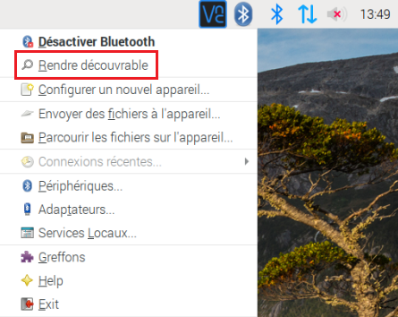.
Il faut ensuite effectuer un scan des appareils si nous ne connaissons pas le nom d'hôte de l'autre Raspberry Pi. Le script doit être présent sur les deux Raspberry Pi afin de pouvoir écouter, recevoir ainsi qu'envoyer des messages. La machine hôte, moi dans ce contexte, doit être en mode MODE_SEND tandis que l'autre en mode MODE_RECEIVE.
Utilisation
Le code fonctionne de la manière suivante. La machine hôte va en premier temps lancer le scan à la recherche de l'appareil nommé morenoPi42.

Une fois l'appareil trouvé, je m'y appareille, puis lui envoie le premier message.

Le mode actuel, change et je deviens la machine qui écoute le port spécifié en attendant un message.


Remote GPIO
Le GPIO nous permet d'accéder aux entrées / sorties des appareils connectés au Raspberry Pi.
Mise en place
Pour pouvoir utiliser le Remote GPIO, il faut tout d'abord l'activer dans l'interface de configuration présente ci-dessous :

Puis dans la fenêtre présente, tout en bas, cliquer sur Activé :

Une fois que la configuration des différents Raspberry Pi est faite, il ne manque plus qu'à télécharger GPIO Zero, une librairie nous donnant accès à la gestion des différentes pins :
sudo pip3 install gpiozero
Ensuite nous aurons besoin de Pi GPIO :
sudo apt install pigpio
Une fois installé, il faut lancer le service PiGPIO : sudo pigpiod sur la machine qui sera contrôlée à distance.
Utilisation
Pour pouvoir se connecter au Raspberry Pi, il faut connaître son adresse IP. Une fois connue, voici comment établir une connexion :
import gpiozero from gpiozero import LED,Button from gpiozero.pins.pigpio import PiGPIOFactory from signal import pause factory = PiGPIOFactory('10.5.50.42') btn = Button(2) # local RPi.GPIO pin led = LED(17, pin_factory=factory) # remote pin btn.wait_for_press() print("button pressed !") led.off() pause()
Dans notre cas, avec M. Moreno interprétant le Raspberry Pi principal qui intéragirait avec les pins de mon Raspberry Pi.

- Le bouton est connecté au GPIO 2, donc la pin 3

- La led est connectée au GPIO 17, donc la pin 11

Matplotlib
Matplotlib est une librairie complète permettant la création de statistiques sur un large panel de graphiques utilisable en Python.
Mise en place
Il faut d'abord installer Matplotlib avec la commande sudo apt-get install python3-matplotlib
Utilisation
Sur le site officiel, il y a cet exemple que j'ai repris pour en faire l'affichage de mon radar 360° :
import numpy as np import matplotlib.pyplot as plt # Fixing random state for reproducibility np.random.seed(19680801) # Compute areas and colors N = 150 r = 2 * np.random.rand(N) theta = 2 * np.pi * np.random.rand(N) area = 200 * r**2 colors = theta plt.subplot(projection='polar') plt.scatter(theta, r, c=colors, s=area, cmap='hsv', alpha=0.75)
Voici ce que l'exemple ici présent donne :

Voici le code créant le graphique que j'utilise pour afficher les points :
def make_chart(): """ Will process the chart and save it into a png """ global rows area = 5 colors = [(1, 0.2, 0.3), (1, 0.8, 0), (0.1, 0.5, 0.1)] # near -> mid -> far cmap_name = "distance_warning" cmap = matplotlib.colors.LinearSegmentedColormap.from_list(cmap_name, colors) data_x = [] data_y = [] angle = 0 # Create the colors I need, values between 0 and 1 for (r, g, b) # add angle in radian and his value in two array x and y for distance in rows: data_x.append(math.radians(angle)) data_y.append(distance) angle += 1 # set the projection to polar plt.subplot(projection="polar") plt.scatter(data_x, data_y, s=area, c=data_y, cmap=cmap) plt.ylim(0, 2000) plt.savefig(constants.CHART_PATH + constants.CHART_NAME) plt.clf()
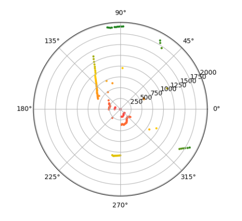
Voici un exemple du scanner en un quasi-temps réel :

Ici, on parle de quasi-temps réel, car comme vu dans le section parlant du Lidar, on traite les données émises par l'API en temps réel de manière asynchrone, mais le graphique étant une image enregistrée, le temps d'écriture de l'image ainsi que le temps de lecture fait que les images s'accumulent et que par conséquent l'image gagne du délai.
RaspAP
RaspAP est une application permettant de mettre en place un point d'accès WiFi avec un raspberry pi facilement.
Mise en place
Par précaution, il est nécessaire de mettre son raspberry pi avec la commande sudo apt update && sudo apt full-upgrade.
Ensuite, il faut télécharger le code du repository Git avec la commande suivante : wget -q https://git.io/voEUQ -O /tmp/raspap && bash /tmp/raspap. Durant toute l'installation, il faut tout accepter, à moins d'avoir une bonne raison, mais dans ce cas ça ne l'est pas.
Après l'installation, il faut redémarrer le raspberry pi. Une fois redémarré, le raspberry pi devrait avec cette adresse IP : 10.3.141.1. Pour pouvois accès à cette informations, ouvrez un terminal et exécuter la commande : ip a ou ifconfig. Normalement vous devriez voir un section nommée Wlan0.
Utilisation
Une fois RaspAP installé, vous pouvez vous rendre sur 10.3.141.1 dans un navigateur web afin d'avoir accès au tableau de bord de RaspAP :
Pour se connecter, une fenêtre comme celle ci-dessous apparaîtra. Les identifiants par défaut sont admin pour le nom d'utilisateur et secret comme mot de passe.

Pour pouvoir se connecter au WiFi (toujours avec les valeurs par défaut) le nom du réseau est : raspi-webgui avec pour mot de passe ChangeMe. Vous pourrez le voir dans les appareils permettant d'accéder à des réseaux WiFi.
Une fois connecté, vous arriverez sur la page de tableau de bord de RaspAP :

Depuis l'interface utilisateur, il faut cliquer sur Hotspot pour pouvoir changer le nom du réseau SSID.

Une fois sur la page de configuration du Hotspot, il faut changer le SSID du réseau par le nom que vous souhaiteriez qu'il adopte. Dans mon cas je l'ai changé à rps4_access_point :
Pour changer le mot de passe Pre Shared Key, il faut aller dans l'onglet Security, remplir les informations que vous souhaitez utiliser pour vous connecter au réseau WiFi. :
Pour terminer, cliquez sur Restart hotspot en bas à droite de la page.
Manuel technique
Dans cette rubrique, nous allons voir comment les divers éléments utilisés dans ce projet ont été mis en place.
Plan réseau
Étant donné que les divers éléments communiquent par le WiFi, ils doivent donc avoir des adresses IP. Dans mon cas, j'ai choisis d'utiliser des adresses IP statiques. Tous les Raspberry Pi 0 WiFi sont connectés sur le point d'accès qu'est le Raspberry Pi 4. Pour comprendre comment le Raspberry Pi 4 a été transformer en point d'accès, veuillez lire la section parlant de la mise en place de RaspAP
Branchements
Alimentation générale
Pour l'alimentation générale, j'ai pris 2 anciens câbles USB que j'ai coupé et dénudé afin de récupérer l'alimentation (Le VCC et le GND). Ces deux câbles ont ensuite été soudés sur les pins de la plaquette.
À la base, la plaquette ressemblait à ceci :

Pour ensuite être soudé de la sorte :


Le courant est soudé sur la pin de droite tandis que la terre sur la pin de gauche. Ce processus a été répété 2 fois car il y a du sorties présentes sur la batterie externe.
Les câbles USB sont branchés dans les ports Output 1 et 2 de la batterie externe comme ceci :

Il est important de noter, que chaque composant est branché à l'alimentation générale de la sorte :

Par conséquent sur cet exemple, les câbles rouges, blancs et violets sont branchés sur le courant et les câbles noirs, gris et bruns sont branchés sur la terre.
Raspberry Pi 4
De base, le Raspberry Pi 4 était branché à l'alimentation générale et était alimenté par les pins 4 et 6 du GPIO, mais après quelque tests, j'ai pu me rendre compte que certain Raspberry Pi 0 WiFi branchés au système d'alimentation générale n'avaient pas assez de courant et ne faisait que de redémarrer en boucle. C'est pourquoi après réflexion, j'ai branché le Raspberry Pi 4 sur la batterie externe en USB-C comme ceci :
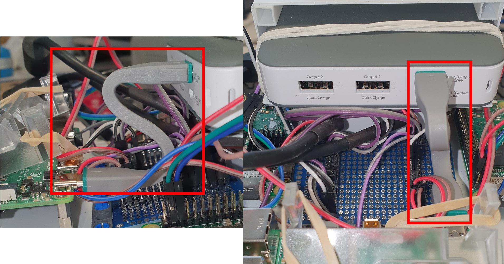
Lidar
Le lidar est branché à l'adaptateur qui permet de le brancher en USB au raspberry comme vu dans la section portant sur le Lidar.
Pour l'affichage graphique des données perçues par le Lidar, veuillez regarder la section parlant de Matplotlib et pour ce qui est de l'affichage des données en un quasi-temps réel, j'utilise la même méthode que pour la récupération du flux de la caméra en temps réel.
Fyling-Fish
Les divers flying-fish sont branchés des câbles gris et violets à l'alimentation générale, mais les valeurs de sorties qu'ils fournissent sont branchés avec des câbles bleus sur les GPIO suivant du raspberry pi 4 :

Raspberry Pi 0 WiFi
Le raspberry pi 0 WiFi est branché à l'alimentation générale et est alimenté par les pins 4 et 6 du GPIO.
Caméra
La caméra est branché de la même manière que dans la section explicant la module caméra
Bright Pi
Le bright Pi est branché sur l'alimentation générale avec des câbles blancs et noirs. Les 2 autres câbles bleus et verts sont branchés sur des GPIO I2C, donc les pins 2 et 9. Pour ce qui est du câblage pour les câbles bleus et verts, il est identique à la section explicant ce qu'est le bright pi.
Scripts
Dans cette section, nous allons parler des différents scripts utilisés ainsi que leurs comportement.
Raspberry Pi 4
À quoi sert-il ?
Ce raspberry pi est le raspberry pi principale. C'est-à-dire que c'est lui qui va être le point d'accès par rapport aux autres rapsberry pi dont la voiture est équipée.
Comment on l'utilise ?
Pour exécuter le script du serveur principal, il faut utiliser la commande python3 server.py depuis le répertoire /code/Flask/flask_server. Ce script est un serveur Flask nous donnant accès aux différentes fonctionnalitées de l'application.
Comment fonctionne-t-il ?
Une fois le serveur lancé, et après nous être rendu avec un navigateur web connecté à l'adresse du raspberry pi et sur le port 5000 du réseau fournit par le raspberry pi 4. Exemple : 10.3.141.1:5000
Barre de navigation
La barre de navigation nous permet de changer de page. Cette dernière contient 5 éléments.

- A. Redirection sur la page d'accueil
- B. Redirection sur la page de télécommande
- C. Redirection sur la page du tableau de bord
- D. Création d'une connexion avec la voiture
- E. Déconnexion avec la voiture
Page d'accueil
Ceci est la page sur laquelle on arrive lorsque l'on tape l'adresse IP du point d'accès avec le port 5000.

- A. Bouton créant une connexion avec la voiture
Page de télécommande
Cette page permet, si une connexion avec la voiture est établie, de contrôler la voiture.

- A. Une barre coulissante allant de -100 à 100 pour gérer la vitesse de la voiture
- B. Une barre coulissante allant de -100 à 100 pour gérer le guidon de la voiture
- C. Bouton remettant le guidon à sa position initiale
- D. Bouton coupant les moteurs de la voiture
- E. Bouton de déconnexion à la voiture
Il est important de savoir que dans le code gérant les déplacement de la voiture, j'inverse les données et les divises par 100 car les valeurs sont comprisent entre -1 et 1. La raison pour laquelle j'inverse par la suite les vitesses dans le code, c'est parce que pour avancer avec la voiture, il faut lui donner une vitesse négative, cependant je trouvais plus logique pour une interface utilisateur que pour avancer l'on ajuste la barre coulissante à droite.
Page du tableau de bord
Cette page permet à l'utilisateur de gérer les différents capteurs et de voir en temps réel les données reçues par les caméras ainsi que par le Lidar.

- A. Case à cocher (dés)activant le mode automatique
- B. Case à cocher (dés)activant les leds à la position indiquée
- Les cases de gauche allument les leds blanches, les cases de droites allument les leds infrarouges
- C. Case à cocher (dés)activant la caméra à la position indiqué
- D. Case à cocher (dés)activant la récuperation des données du Lidar
De base, toutes les caméras sont éteintes ainsi que le radar :


Voici ce à quoi ça ressemble lorsque l'on active une caméra et le radar :

J'ai choisis d'afficher les éléments à la suite, car l'utilisateur va utiliser son téléphone pour se connecter à l'application. Il est donc plus pratique d'avoir accès aux éléments comme ceci étant sur un téléphone portable.
Pour comprendre comment le flux des caméras sont récupérer, veuillez regarder la section parlant du récupération du flux vidéo.
Page création de connexion
Lors de l'appuie sur cet élément, cela va lancer une connexion avec la voiture.
Page de déconnexion
Lors de l'appuie sur cet élément, cela va lancer une déconnexion avec la voiture.
Comment fonctionne la connexion avec la voiture ?
La création de la connexion avec la voiture s'effectue dans la classe car. Cette classe lorsque l'on crée un nouvel objet, va demander une connexion Gatt au Technic Hub.
class CarController: """Class controlling the car""" MY_MOVEHUB_ADD = "90:84:2B:50:36:43" MY_BTCTRLR_HCI = "hci0" MIN_ANGLE = -1 MAX_ANGLE = 1 DEFAULT_ANGLE = 0 MAX_MOTOR_POWER = 1 MOTOR_STOP_POWER = 0 MAXIMUM_SPEED_WHEN_GROUND_ISNT_DETECTED = 0.2 def __init__(cls): cls.connection = get_connection_gatt(hub_mac=cls.MY_MOVEHUB_ADD) try: cls.movehub = MoveHub(cls.connection) # The motors cls.front_motor = Motor(cls.movehub, cls.movehub.PORT_A) cls.back_motor = Motor(cls.movehub, cls.movehub.PORT_B) cls.directionnal_motor = EncodedMotor(cls.movehub, cls.movehub.PORT_C) cls.old_angle = cls.DEFAULT_ANGLE except: cls.movehub = None cls.front_motor = None cls.back_motor = None cls.directionnal_motor = None cls.instance = None cls.connection = None cls.old_angle = None
On fait un try/except car si la demande n'est pas aboutie, il faut que l'on puisse tout de même remplir les champs de la classe.
Voici la route qui permet de créer la connexion :
@app.route("/create_car/") def create_car(): """Used to the creation of the car""" global car car = CarController() if hasattr(car, "connection"): return render_template("form_remote_car.html") else: car = None return render_template( "error.html", msg="Une connexion est nécessaire pour pouvoir intéragir avec" )
Lors de l'appel à la route ci-dessus, il ne faut pas oublier de cliquer sur le bouton vert du Technic Hub.
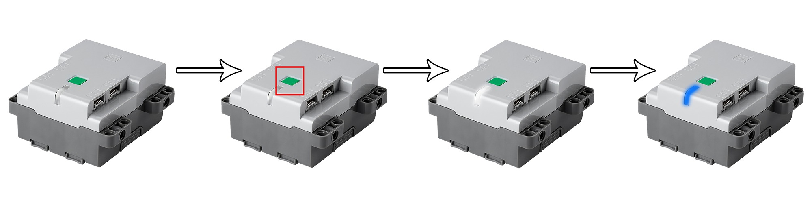
Il est important de noter que la voiture est stockée dans une variable globale car ceci nous permet de alors d'avoir accès à la voiture depuis divers méthodes. À la base, cette connexion avec la voiture était faite à travers le design pattern du Singelton :
def __new__(cls): if(cls.instance is None): cls.instance = super(CarController, cls).__new__(cls) cls.connection = get_connection_gatt(hub_mac=cls.MY_MOVEHUB_ADD) try: cls.movehub = MoveHub(cls.connection) # The motors cls.front_motor = Motor(cls.movehub, cls.movehub.PORT_A) cls.back_motor = Motor(cls.movehub, cls.movehub.PORT_B) cls.directionnal_motor = EncodedMotor(cls.movehub, cls.movehub.PORT_C) except: cls.movehub = None cls.front_motor = None cls.back_motor = None cls.directionnal_motor = None return cls.instance
Le problème que le Singleton avait était que des fois, il perdait la connexion à la voiture alors que l'instance de l'objet était toujours présente. C'est-à-dire, que lorsque l'on se déconnectait de la voiture à l'aide de la méthode de déconnexion appelée par la route :
# Code présent dans la classe CarController def disconnect(self): self.connection.disconnect() # Code présent dans le fichier server.py dans le répertoire /code/Flask/flask_server/ @app.route("/close_connection/") def close_connection(): """Close the connection between the Raspberry Pi and the Technic Hub""" global car output = "Connexion toujours en cours" if car != None: car.disconnect() output = "Connexion fermée avec l'appareil {0}".format(car.MY_MOVEHUB_ADD) car = None return render_template("connection.html", msg=output)
Comment fonctionne la récupération des données du Lidar ?
Pour activer l'API C++ pour y récupérer les distances à chaque angles qui sont écrits dans la console et afin d'éviter de rendre le code bloquant, j'ai utilisé Asyncio.
Voici le code permettant l'appel et le traitement asynchrone des données :
@app.route("/bg_processing_lidar/<string:state>", methods=["POST"]) def bg_process_lidar(state=None): """Process the values passed by Javascript""" try: loop = asyncio.get_running_loop() except RuntimeError: # no event loop running: loop = asyncio.new_event_loop() finally: loop.run_until_complete(main(state)) return "" async def main(should_scan): """ The main function which calls the run loop async should_scan : The code to know if the program should scan or not """ await run(should_scan) async def run(should_scan): """ Will run the subprocess and bind the async method should_scan : The code to know if the program should scan or not """ command = ("./scanner/simple_grabber /dev/ttyUSB0 " + should_scan).split() process = await create_subprocess_exec(*command, stdout=PIPE, stderr=PIPE) await asyncio.wait([_read_stream(process.stdout, lambda x: {get_radar_data(x)})]) await process.wait() async def _read_stream(stream, callback): """ Will read the text in the console from the process simple_grabber stream : The streaming of the data in the console callback : The method to call when data has been received """ while True: line = await stream.readline() if line: callback(line.split(b",")) else: break def get_radar_data(row): """ Will parse the data received in text by the Lidar row : Row to read and to add or modify in the array of angles """ global rows # row normaly is like [angle, distance] tmp = row if len(tmp) == 2: angle = int(tmp[0]) # remove the line return dist = tmp[1].replace(b"\n", b"") rows[angle] = float(dist)
Comme l'on peut le voir, lors de l'activation ainsi que de la désactivation du Lidar. On effectue un processus car étant donné que dans le code de l'API, il s'agit d'une boucle infinie récupérant et lissant les données qui sont affichées dans la console, on a besoin de manière asynchrone à traiter ses données et à les mettre dans le tableau.
C'est ce à quoi sert la méthode _read_stream. Cette méthode nous permet de lire ligne par ligne le contenu de sortie de la console (process.stdout) et en l'ajoutant dans le tableau avec la méthode get_radar_data(row).
Code de l'API C++ modifié
int main(int argc, const char *argv[]) { const char *opt_com_path = NULL; _u32 opt_com_baudrate = 115200; u_result op_result; bool run_scan = false; // check if the the program should run scans if(argc == 3) { char arg = (char)*argv[2]; if(arg == '1') { run_scan = true; } else if(arg == '0') { run_scan = false; } } if (argc < 2) { print_usage(argc, argv); return -1; } opt_com_path = argv[1]; // create the driver instance RPlidarDriver *drv = RPlidarDriver::CreateDriver(DRIVER_TYPE_SERIALPORT); if (!drv) { fprintf(stderr, "insufficent memory, exit\n"); exit(-2); } rplidar_response_device_health_t healthinfo; rplidar_response_device_info_t devinfo; do { // try to connect if (IS_FAIL(drv->connect(opt_com_path, opt_com_baudrate))) { fprintf(stderr, "Error, cannot bind to the specified serial port %s.\n", opt_com_path); break; } op_result = drv->getDeviceInfo(devinfo); if (IS_FAIL(op_result)) { if (op_result == RESULT_OPERATION_TIMEOUT) { // you can check the detailed failure reason fprintf(stderr, "Error, operation time out.\n"); } else { fprintf(stderr, "Error, unexpected error, code: %x\n", op_result); // other unexpected result } break; } op_result = drv->getHealth(healthinfo); if (IS_OK(op_result)) { // the macro IS_OK is the preperred way to judge whether the operation is succeed. switch (healthinfo.status) { case RPLIDAR_STATUS_WARNING: printf("Warning."); break; case RPLIDAR_STATUS_ERROR: printf("Error."); break; } printf(" (errorcode: %d)\n", healthinfo.error_code); } else { fprintf(stderr, "Error, cannot retrieve the lidar health code: %x\n", op_result); break; } if (healthinfo.status == RPLIDAR_STATUS_ERROR) { fprintf(stderr, "Error, rplidar internal error detected. Please reboot the device to retry.\n"); break; } drv->startMotor(); if (IS_FAIL(drv->startScan(0, 1))) // you can force rplidar to perform scan operation regardless whether the motor is rotating { fprintf(stderr, "Error, cannot start the scan operation.\n"); break; } int max_size_arr_angle_dist = 360; float angle_dist_tmp[max_size_arr_angle_dist]; float angle_dist[max_size_arr_angle_dist]; int size_arr_angle_dist = (sizeof(angle_dist) / sizeof(angle_dist[0])); const int MAX_RANGE_LIDAR = 16000.0f; const int MIN_RANGE_LIDAR = 0.0f; // used as a code in order to treat the data below in another process //printf("<<<\n"); while (run_scan) { //reset the array to empty (empty represented by the 0) std::fill_n(angle_dist, max_size_arr_angle_dist, 0.0f); capture_and_display(angle_dist, drv); if (size_arr_angle_dist == 0) { fprintf(stderr, "Error, cannot grab scan data.\n"); break; } /* Correct the errors */ for (size_t j = 0; j < max_size_arr_angle_dist; j++) { if (angle_dist[j] < MIN_RANGE_LIDAR && angle_dist[j] >= MAX_RANGE_LIDAR) { angle_dist[j] = MIN_RANGE_LIDAR; } } /* make the average of distance */ capture_and_display(angle_dist_tmp, drv); for (size_t j = 0; j < max_size_arr_angle_dist; j++) { if (angle_dist_tmp[j] > MIN_RANGE_LIDAR && angle_dist_tmp[j] < MAX_RANGE_LIDAR) { angle_dist[j] = (angle_dist[j] + angle_dist_tmp[j]) / 2; } } for (size_t j = 0; j < max_size_arr_angle_dist; j++) { printf("%d,%f\n", j, angle_dist[j]); } } } while (0); drv->stop(); drv->stopMotor(); RPlidarDriver::DisposeDriver(drv); return 0; }
Qu'est-ce qu'Asyncio ?
Asyncio est une librairie python nous permettant d'écrire du code concurrent c'est à dire sur différents thread à l'aide de la syntaxe async / await.
Pour installer asyncio il faut exécuter la commande sudo pip3 install asyncio.
Comment est-ce qu'il s'utilise ?
Voici un code d'exemple pour montrer la mécanique :
import asyncio try: # Tente de récupérer la référence d'une boucle loop = asyncio.get_running_loop() except RuntimeError: # Si aucune référence n'a été trouvée, on crée une nouvelle boucle loop = asyncio.new_event_loop() finally: # Exécution de la méthode jusqu'à ce qu'elle soit finie loop.run_until_complete(main("Ceci est un message asynchrone")) async def main(message) print(message)
Il est important de savoir qu'il existe 2 différentes manière d'exécuter le code.
run_until_complete, va exécuter le code jusqu'à être arrivé à la fin de la méthode.run_forever, va exécuter le code en boucle jusqu'à ce que l'on stop la boucle avecloop.stop().
Comment fonctionne la gestion du déplacement de la voiture ?
Télécommande
La télécommande effectue des appels AJAX avec les valeurs des barres coulissantes comme ceci :
<script type="text/javascript"> $(document).on('input', '#rngMove', function() { execute(); }); $(document).on('input', '#rngRotationAngle', function() { execute(); }); function execute(){ $.ajax({ url: '/bg_processing_car/', data: $('form').serialize(), type: 'POST', success: function(response) { console.log("action performed"); }, error: function(error) { console.log(error); } }); } </script>
Les ID rngMove et rngRotationAngle sont ceux attachés aux barres coulissantes. À chaque changement de valeurs, qu'il s'agisse du guidon ou de la vitesse des moteurs, la route appelée à l'aide d'AJAX /bg_processing_car/ se charge de faire le traitement :
@app.route("/bg_processing_car/", methods=["POST"]) def bg_process_car(): """Process the values passed by Javascript""" global car move_speed = request.form["rngMove"] angle_rotation = request.form["rngRotationAngle"] if car != None: # Convert the values move_speed = float(move_speed) angle_rotation = int(angle_rotation) # Get the allowed actions of the car actions = get_actions_for_car(move_speed) car.move(move_speed, angle_rotation, actions) return render_template( "form_remote_car.html", speed=move_speed, angle=angle_rotation, ) def get_actions_for_car(speed): """Process the actions that the car is allowed to do according to the flying-fish""" actions = (constants.CODE_TURN_NOTHING, constants.CODE_MOVE_NOTHING) # INDEX 0 represent the turn code # INDEX 1 represent the move code if ( GPIO.input(constants.GPIO_FLYING_FISH_FRONT_LEFT) and GPIO.input(constants.GPIO_FLYING_FISH_FRONT_RIGHT) and not GPIO.input(constants.GPIO_FLYING_FISH_BACK_LEFT) and not GPIO.input(constants.GPIO_FLYING_FISH_BACK_RIGHT) ): print("les deux avant") actions = (constants.CODE_TURN_NOTHING, constants.CODE_MOVE_BACKWARD) elif GPIO.input(constants.GPIO_FLYING_FISH_FRONT_LEFT): print("gauche avant") actions = (constants.CODE_TURN_RIGHT, constants.CODE_MOVE_NOTHING) elif GPIO.input(constants.GPIO_FLYING_FISH_FRONT_RIGHT): print("droite avant") actions = (constants.CODE_TURN_LEFT, constants.CODE_MOVE_NOTHING) elif ( not GPIO.input(constants.GPIO_FLYING_FISH_FRONT_LEFT) and not GPIO.input(constants.GPIO_FLYING_FISH_FRONT_RIGHT) and GPIO.input(constants.GPIO_FLYING_FISH_BACK_LEFT) and GPIO.input(constants.GPIO_FLYING_FISH_BACK_RIGHT) ): print("les deux arrière") actions = (constants.CODE_TURN_NOTHING, constants.CODE_MOVE_FORWARD) elif GPIO.input(constants.GPIO_FLYING_FISH_BACK_LEFT): print("gauche arrière") actions = (constants.CODE_TURN_RIGHT, constants.CODE_MOVE_FORWARD) elif GPIO.input(constants.GPIO_FLYING_FISH_BACK_RIGHT): print("droite arrière") actions = (constants.CODE_TURN_LEFT, constants.CODE_MOVE_FORWARD) return actions
Voici le code de déplacement pour la voiture dans la classe CarController :
def move(self, motor_speed, angle_rotation, actions): """Moves the car with a specific speed and rotation motor_speed : The motor's speed NOTE : to move forward, the value must be reversed because it is basically negative angle_rotation : The rotation of the directionnal motor actions : The list of the possible actions """ # Invert the power direction if motor_speed != 0: motor_speed *= -1 # Max value of motor is -1 and +1 but in the HTML form, the range input can be set between -100 to +100 motor_speed /= 100 angle_rotation /= 100 # INDEX 0 represent the turn code # INDEX 1 represent the move code try: if actions[0] == constants.CODE_TURN_LEFT and angle_rotation < 0: self.turn(angle_rotation) elif actions[0] == constants.CODE_TURN_RIGHT and angle_rotation > 0: self.turn(angle_rotation) elif actions[0] == constants.CODE_TURN_NOTHING: self.turn(angle_rotation) if actions[1] == constants.CODE_MOVE_FORWARD and motor_speed < 0: if motor_speed > self.MAXIMUM_SPEED_WHEN_GROUND_ISNT_DETECTED: motor_speed = self.MAXIMUM_SPEED_WHEN_GROUND_ISNT_DETECTED self.front_motor.start_power(motor_speed) self.back_motor.start_power(motor_speed) elif actions[1] == constants.CODE_MOVE_BACKWARD and motor_speed > 0: if motor_speed > self.MAXIMUM_SPEED_WHEN_GROUND_ISNT_DETECTED: motor_speed = self.MAXIMUM_SPEED_WHEN_GROUND_ISNT_DETECTED self.front_motor.start_power(motor_speed) self.back_motor.start_power(motor_speed) elif actions[1] == constants.CODE_MOVE_NOTHING: self.front_motor.start_power(motor_speed) self.back_motor.start_power(motor_speed) except AssertionError: pass def turn(self, angle): """Turn the directionnal motor from the input value angle : The angle we wants the directionnal motor goes to """ try: self.directionnal_motor.start_power(angle) self.old_angle = angle except AssertionError: pass def reset_handlebar(self): # Reset the angle angle = self.old_angle * -1 angle /= 2 try: self.directionnal_motor.start_power(angle) self.old_angle = angle except AssertionError: pass def stop_moving(self): """Stop the motors""" # Reset the angle try: self.reset_handlebar() self.front_motor.start_power(self.MOTOR_STOP_POWER) self.back_motor.start_power(self.MOTOR_STOP_POWER) except AssertionError: pass
On peut remarquer que dans les différentes méthodes j'utilise des try / except. Je suis obligé de les utiliser, car lors de l'envoie d'une commande au Technic Hub, il doit retourner une réponse, cependant des fois il se peut que pendant qu'il traite une commande, avant qu'il aie pu répondre une autre commande lui soit envoyée. Ce qui cause un problème de confirmation, et qui par conséquent faisait crash le programme.
Boutons
Pour comprendre plus en détail le rôle des boutons, veuillez vous référer à la section décrivant l'interface pour la télécommande.
Voici comment les actions qu'ils produisent sont gérées :
@app.route("/form_remote_response/", methods=["POST"]) def form_remote_response(): """The form's answer of the remote""" global car # Init move_speed = constants.DEFAULT_SPEED angle_rotation = constants.DEFAULT_ANGLE returned_value = render_template( "form_remote_car.html", speed=move_speed, angle=angle_rotation, ) error = render_template( "error.html", msg="Une connexion est nécessaire pour pouvoir intéragir avec" ) if request.method == "POST": if request.form["send_request"] == constants.BTN_REQUEST_RESET_ANGLE: if car != None: car.reset_handlebar() else: returned_value = error elif request.form["send_request"] == constants.BTN_REQUEST_STOP: if car != None: car.stop_moving() else: returned_value = error elif request.form["send_request"] == constants.BTN_REQUEST_DISCONNECT: returned_value = redirect("/close_connection/") return returned_value
Comment fonctionne le système d'arrêt d'urgence de la voiture ?
Le système d'argent d'urgence est basé sur ce que les Flying-Fish détectent.
Au lancement de l'application, la méthode initFlyingFish() est exécutée, ils ont tous été attachés à une méthode qui se déclenchera à chaque changement d'état :
flying_fish_state = [ constants.FLYING_FISH_STATE_GROUNDED, constants.FLYING_FISH_STATE_GROUNDED, constants.FLYING_FISH_STATE_GROUNDED, constants.FLYING_FISH_STATE_GROUNDED, ] def initFlyingfish(): # Set the mode into Broadcom SOC channel # It allows to use GPIO number instead of pin number GPIO.setmode(GPIO.BCM) # Set the GPIO into input mode GPIO.setup(constants.GPIO_FLYING_FISH_FRONT_RIGHT, GPIO.IN) GPIO.setup(constants.GPIO_FLYING_FISH_FRONT_LEFT, GPIO.IN) GPIO.setup(constants.GPIO_FLYING_FISH_BACK_RIGHT, GPIO.IN) GPIO.setup(constants.GPIO_FLYING_FISH_BACK_LEFT, GPIO.IN) # Add the events GPIO.add_event_detect( constants.GPIO_FLYING_FISH_FRONT_RIGHT, # GPIO 17 GPIO.FALLING, callback=get_grounded_state, bouncetime=constants.GPIO_BOUNCEBACK, ) GPIO.add_event_detect( constants.GPIO_FLYING_FISH_FRONT_LEFT, # GPIO 27 GPIO.FALLING, callback=get_grounded_state, bouncetime=constants.GPIO_BOUNCEBACK, ) GPIO.add_event_detect( constants.GPIO_FLYING_FISH_BACK_RIGHT, # GPIO 23 GPIO.FALLING, callback=get_grounded_state, bouncetime=constants.GPIO_BOUNCEBACK, ) GPIO.add_event_detect( constants.GPIO_FLYING_FISH_BACK_LEFT, # GPIO 24 GPIO.FALLING, callback=get_grounded_state, bouncetime=constants.GPIO_BOUNCEBACK, ) def get_grounded_state(self): """Will stop the motors if the ground isn't detected anymore""" global car global flying_fish_state for i in range(len(constants.GPIO_FLYING_FISH)): for sensor_state in flying_fish_state: input_values = not GPIO.input(constants.GPIO_FLYING_FISH[i][0]) if sensor_state != input_values: if car != None and (input_values) != True: car.stop_moving() # Invert his state sensor_state = input_values flying_fish_state[i] = sensor_state print(flying_fish_state)
Pour savoir quel Flying-Fish est associée à quel GPIO, veuillez lire la section en parlant dans la section des branchements.
Lorsque l'un des Flying-Fish change d'état et que son état ne deviens pas à True, la voiture coupe alors ses moteurs. Si le nouvel état est True, cela veut dire que l'on vient de détecter du sol.
À noter, que l'utilisateur peut toujours faire avancer sa voiture lorsque l'un des capteurs ne détecte plus de sol, car si on arrive dans une configuration comme celle ci :
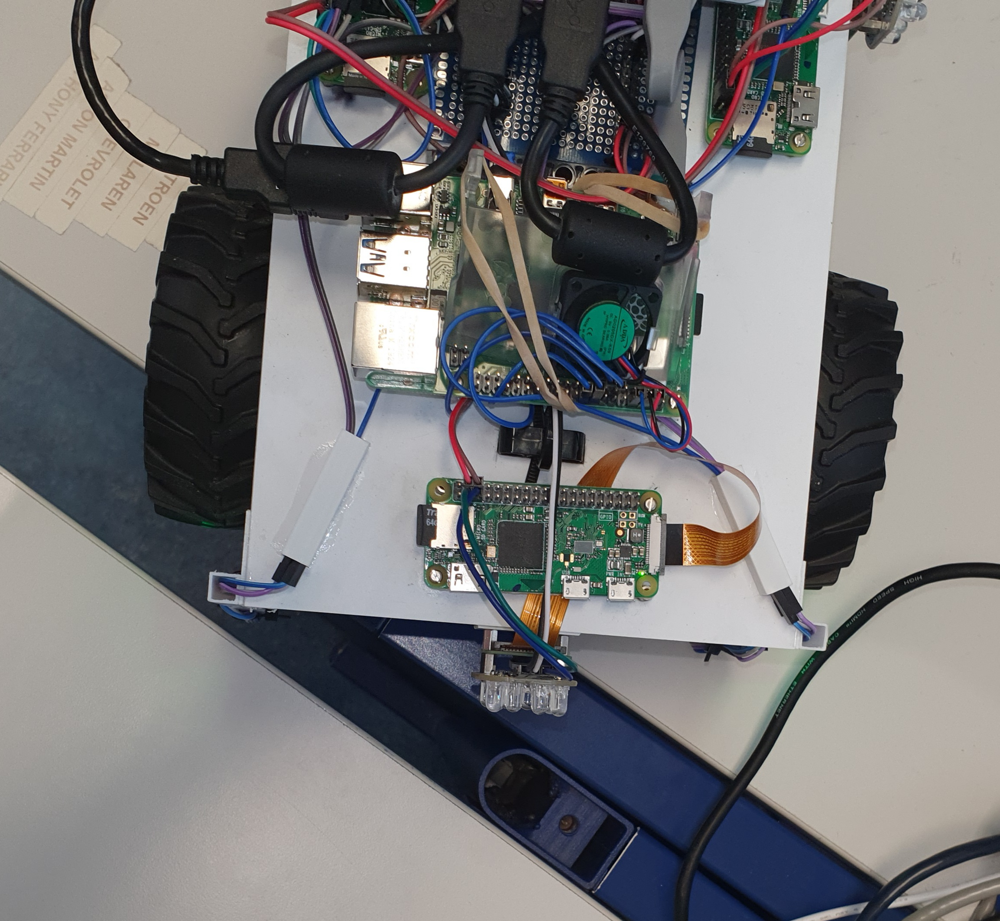
Sachant qu'il s'agit de l'utilisateur, il est conscient qu'il peut toujours avancer, cependant je n'ai pas laissé l'utilisateur allez dans le sens du vide, car même s'il se peut qu l'on arrive dans la quasi-même configuration que vu dans l'image du dessus, mais avec les deux roues entres les tables.
Je ne l'ai pas laissé avancer dans le sens du vide, car dans la plupart du temps si la ligne de détecteur ne détecte plus de sol. C'est qu'il y a de fortes chances que nous puissions pas attendeindre l'autre côté du vide et par conséquent faire tomber la voiture dans ce vide.
Mais dans le cas ou la voiture est au bord de table de justesse, l'utilisateur peut tout de même mettre les gaz à fond. Ce qui est déconseillé, car certes dès la non détection du sol les moteurs se coupent mais à cause de l'inertie des roues, la voiture tombe dans le vide. Il est donc très important que dans ce genre de cas l'utilisateur soit conscient de ce qu'il fait.

Comment fonctionne le mode automatique de la voiture ?
Lorsque le lidar est actif et que le mode automatique a été activée par la route /launch_automatic_mode/<int:state>, la méthode gérant la voiture va être lancée sur un autre thread différent de celui principal. À la base, j'avais tenté d'utiliser Asyncio une nouvelle fois pour ce cas mais j'avais besoin de pouvoir changer l'état de le boucle présente dans automatic_mode(), car avec Asyncio lorsque je relançais le mode automatique, il y avait des erreurs qui intervenaient tandis qu'en exécutant le programme sur un autre thread on peut relancer le mode avec l'état de la case à cocher associée.
@app.route("/launch_automatic_mode/<int:state>", methods=["POST"]) def launch_automatic_mode(state=None): """Launch the automatic_mode on another thread""" global automatic_mode_state automatic_mode_state = state # Create the thread thread = threading.Thread(target=automatic_mode) # Launch it thread.start() return "" def automatic_mode(): """Execute the automatic mode""" global car global rows global automatic_mode_state global obstacles_distances_front_left global obstacles_distances_front_right while automatic_mode_state == constants.MODE_ON: # Used to store the obstacles detected at left and right obstacles_distances_front_left = [] obstacles_distances_front_right = [] for i in range(len(rows)): distance = rows[i] if car != None: # Verify that the current angle is between 0 and 15, 345 and 360 if ( i < constants.MAX_ANGLE_OBSTACLE_DETECTION or i > constants.FULL_ANGLE - constants.MAX_ANGLE_OBSTACLE_DETECTION ): # Verify if the distance is lower than the max front distance obstacle detection if ( distance < constants.FRONT_DISTANCE_OBSTACLE_DETECTION and distance > 0 ): # If the current angle is lower than the max angle # Add it into the left array if i < constants.MAX_ANGLE_OBSTACLE_DETECTION: obstacles_distances_front_left.append(distance) # If the current angle is greater than the max angle inverted (345 to 360) # Add it into the right array if ( i > constants.FULL_ANGLE - constants.MAX_ANGLE_OBSTACLE_DETECTION ): obstacles_distances_front_right.append(distance) # Compute the power, more the obstacle is near, more the motors will be powered speed = distance / constants.FRONT_DISTANCE_OBSTACLE_DETECTION # Goes backward car.auto_move(speed) # Verify that the current angle is between 165 and 180, 180 and 195 elif ( i < constants.HALF_ANGLE + constants.MAX_ANGLE_OBSTACLE_DETECTION or i > constants.HALF_ANGLE - constants.MAX_ANGLE_OBSTACLE_DETECTION ): # Verify if the distance is lower than the max front distance obstacle detection if ( distance < constants.BACK_DISTANCE_OBSTACLE_DETECTION and distance > 0 ): # Compute the power, more the obstacle is near, more the motors will be powered speed = distance / constants.BACK_DISTANCE_OBSTACLE_DETECTION # Goes forward car.auto_move(speed * (-1)) else: # If nothing, reset the handlebar and stop the motors car.stop_moving() car.reset_handlebar() # Select the smallest element lowest_dist_left = constants.FRONT_DISTANCE_OBSTACLE_DETECTION for i in range(len(obstacles_distances_front_left)): if lowest_dist_left > obstacles_distances_front_left[i]: lowest_dist_left = obstacles_distances_front_left[i] # Select the smallest element lowest_dist_right = constants.FRONT_DISTANCE_OBSTACLE_DETECTION for i in range(len(obstacles_distances_front_right)): if lowest_dist_right > obstacles_distances_front_right[i]: lowest_dist_right = obstacles_distances_front_right[i] # Check that their values are not the default one if ( lowest_dist_right != constants.FRONT_DISTANCE_OBSTACLE_DETECTION and lowest_dist_left != constants.FRONT_DISTANCE_OBSTACLE_DETECTION ): # If the nearest obstacle is at left, we need to turn to the right if lowest_dist_left < lowest_dist_right: car.turn(car.MIN_ANGLE) # If the nearest obstacle is at right, we need to turn to the left elif lowest_dist_left > lowest_dist_right: car.turn(car.MAX_ANGLE) # Else, just reset the handlebar else: car.reset_handlebar()
Voici l'algorithme résumé :

Raspberry Pi 0 WiFi
À quoi servent-ils ?
Les raspberry pi 0 WiFi, sont utilisés pour gérer les caméras et les phares.
Comment on l'utilise ?
Il faut lancer sur chaque raspberry pi 0 WiFi le serveur Flask avec la commande : python3 ACKERMANNGUE-AG_Dipl_Tech_2021_VoitureAssistee/code/Flask/flask_sensors_control/server.py.
Comment fonctionne-t-il ?
Le serveur Flask proprose 2 routes :
Gestion des capteurs à distance
Pour gérer les capteurs à distance, j'utilise 2 serveurs Flask différents.
Le premier est le serveur principale tournant sur le Pi 4, celui sur lequel l'utilisateur sera pour avoir accès au tableau de bord, à la télécommande pour la voiture.
Le second est le serveur tournant sur les Pi 0 WiFi, son rôle est d'effectuer des actions en fonction des diverses routes utilisées. Il y a 2 routes très importantes.
-
@app.route('/streaming_camera') -
@app.route('/<string:sensor>/<int:state>', methods=['POST', 'OPTIONS']) -
Le flux vidéo de la caméra
-
La gestion des modules caméra et bright-pi
La seconde est celle qui effectue les actions sur les capteurs, voici un exemple : 192.168.50.230:5000/camera/1.
À noter, il est important d'utiliser Flask-CORS comme suit :
... from flask_cors import CORS from flask_cors.decorator import cross_origin ... app = Flask(__name__) cors = CORS(app, withCredentials = True) ... @app.route('/<string:sensor>/<int:state>', methods=['POST', 'OPTIONS']) @cross_origin() def sensor_control(sensor=None, state=None): ...
Car vu que l'on accède à cette route depuis une autre adresse IP, il est nécessaire d'ajouter cette ligne @cross_origin() car elle permet de laisser l'accès à cette route depuis un autre domaine. De plus, il est important d'ajouter 'OPTIONS' car lors de la première lecture de CORS, cette méthode sera utilisée en tant qu'approbation de la part du serveur.
Dans la page du tableau de bord pour l'utilisateur se trouve l'appel AJAX qui va effectuer l'action :
<script type="text/javascript"> const STATE_ON = 1; const STATE_OFF = 0; const CODE_FRONT = 0; const CODE_RIGHT = 1; const CODE_BACK = 2; const CODE_LEFT = 3; const CODE_OTHER = 4; const SENSOR_CAMERA = "camera" const SENSOR_LIDAR = "lidar" const MODE_AUTOMATIC = "auto" const IP_RSP_FRONT = 60; const IP_RSP_RIGHT = 114; const IP_RSP_BACK = 172; const IP_RSP_LEFT = 218; const IP_RSP_MAIN = 1; const IP_NETWORK = "10.3.141."; $(document).ready(function () { $("#form_dashboard :checkbox").change(function () { let endpoint = ""; let ip_address = IP_NETWORK; // get the value of the checkbok, it can be "bright-pi", "camera" or "flying-fish" let cbx_value = $(this).val() // get the name of the checkbox let cbx_name = $(this).attr('name') // get the last char of the checkbox's name in order to know which side needs to be changed // example : cbxLight0, the 0 = the bright pi front sensors let code_position = parseInt(cbx_name.substring(cbx_name.length - 1, cbx_name.length)) // reload the iframe of the selected camera if(cbx_value == SENSOR_CAMERA){ var iframe = document.getElementById(`cnvCam${code_position}`); console.log(iframe.src) iframe.src = iframe.src } // choose the correct ip for the raspberry switch (code_position) { case CODE_FRONT: ip_address+=IP_RSP_FRONT break; case CODE_RIGHT: ip_address+=IP_RSP_RIGHT break; case CODE_BACK: ip_address+=IP_RSP_BACK break; case CODE_LEFT: ip_address+=IP_RSP_LEFT break; case CODE_OTHER: ip_address+=IP_RSP_MAIN break; default: break; } // verify the state of the checkbox if (this.checked) { cbx_state = STATE_ON; } else { cbx_state = STATE_OFF; } // add the Flask port ip_address += ":5000"; // set the URL endpoint = `http://${ip_address}/${cbx_value}/${cbx_state}` if(cbx_value == SENSOR_LIDAR){ endpoint = `/bg_processing_lidar/${cbx_state}`; $("#lidar").attr("src", `/video_feed/${cbx_state}`); } if(cbx_value == MODE_AUTOMATIC){ endpoint = `/launch_automatic_mode/${cbx_state}`; } execute(endpoint); }); }); function execute(endpoint) { $.ajax({ url: endpoint, type: "POST", success: function (response) { console.log(response); }, error: function (error) { console.log(error); }, }); } </script>
Récupération du flux vidéo
La méthode que j'utilise pour récupérer le flux vidéo de la caméra avec un serveur Flask est tiré de ce github.
Cette méthode se construit comme suit :

Voici le code utilisé dans le fichier server.py présent dans le répertoire \code\Flask\flask_sensors_control :
@app.route('/streaming_camera') def cam_stream(): global camera_state return render_template('index.html', name=constants.FRONT_CAM, mode=camera_state, on=constants.STATE_ON, off=constants.STATE_OFF) def gen(camera): #get camera frame while True: frame = camera.get_frame() yield (b'--frame\r\n' b'Content-Type: image/jpeg\r\n\r\n' + frame + b'\r\n\r\n') @app.route('/video_feed') def video_feed(): global pi_camera return Response(gen(pi_camera), mimetype='multipart/x-mixed-replace; boundary=frame')
À noter, le code pour la caméra a été repris du GitHub, mais dans mon cas il a été important de le modifier car à la base la caméra avait comme nombre de frame par seconde à 30 ainsi qu'une qualité d'image de 480p ce que j'ai changé à la moitié afin d'éviter de surcharger le processeur du Raspberry Pi 4 :
import cv2 from libs.pivideostream import PiVideoStream import imutils import time import numpy as np class VideoCamera(object): def __init__(self, flip = True, fps=15, res=(320, 256)): print("cam init") self.vs = PiVideoStream(resolution=res, framerate=fps).start() time.sleep(2.0) if self.vs != None: print("cam init done") self.flip = flip def __del__(self): print("cam del") self.vs.stop() def flip_if_needed(self, frame): if self.flip: return np.flip(frame, 0) return frame def get_frame(self): frame = self.flip_if_needed(self.vs.read()) ret, jpg = cv2.imencode('.jpg', frame) return jpg.tobytes()
Voici le code HTML utilisé pour faire l'affichage de l'image :
<title>{{name}}</title> <meta name="viewport" content="width=device-width, initial-scale=1"> <link rel="stylesheet" href="https://cdnjs.cloudflare.com/ajax/libs/font-awesome/4.7.0/css/font-awesome.min.css"> <body> <div class="main" id="newpost"> {% if mode == on %} <img class="camera-bg" style="width: 100%; height:80%; background-attachment: fixed;" id="bg" class="center" src="{{ url_for('video_feed') }}"> {% elif mode == off %} <img class="camera-bg" style="width: 100%; height:80%; background-attachment: fixed;" id="bg" class="center" src="../static/img/camera_down.png"> {% endif %} </div> </body>
Cette image va donc être modifiée à chaque frame reçue par la caméra.
Dates importantes
- Lundi 19 avril 2021 : Début du travail de diplôme
- Vendredi 30 avril 2021 : Évaluation intermédiaire 1
- Vendredi 14 mai 2021 : Rendu du rapport intermédiaire + poster
- Vendredi 14 mai 2021 : Rendu version intermédiaire du résumé et de l’abstract (pour conseils par l’enseignant d’anglais)
Lundi 17 mai 2021 : Évaluation intermédiaire 2 - Jeudi 20 mai 2021 après-midi : Soirée poster : amis, famille, CFC, experts
- 14h00 : Visite des classes de 1re année (cf. SG)
- 16h30 : Amis, famille, experts, enseignants Tech ES…
- 18h00 : Fin de la soirée poster
- Lundi 31 mai 2021 : Évaluation intermédiaire 3
- Vendredi 11 juin 2021 : Rendu du travail avant 12h00
- Jeudi 17 juin 2021 : Défenses à blanc + harmonisation des notes
- Lundi 21 juin ou mardi 22 juin 2021 : Défenses de diplôme